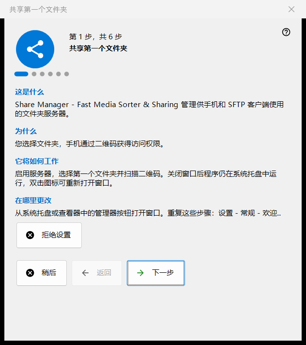
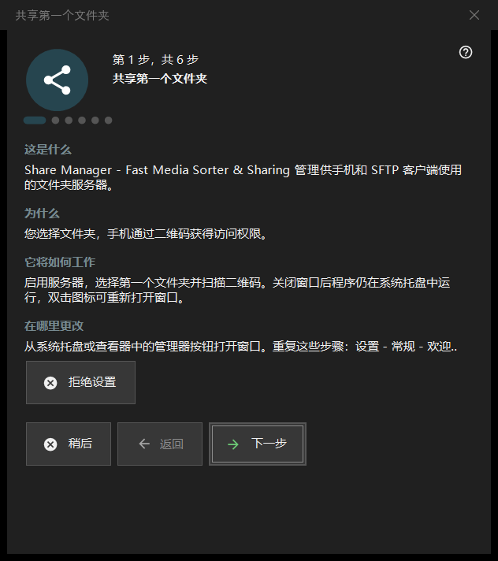

共享第一个文件夹
用途说明
一个六步向导，带您从零开始到手机可访问的共享文件夹：它开启服务器、选择第一个文件夹、设置端口和基本选项，最后以状态检查结束。它在 Share Manager 首次启动时打开，也可以从设置中重新运行。


操作顺序
- 阅读简介，点击「下一步」。
- 在「启用服务器」一页点击一次按钮，并确认管理员权限提示。
- 选择第一个文件夹及其选项。
- 保留或更改端口。
- 设置语言、启动和本地网络选项。
- 在最后一页查看状态，打开二维码，然后点击「完成」。
界面元素
步骤和按钮
页脚显示「第 N 步，共 6 步」。「返回」和「下一步」在各页之间切换，最后一页上「下一步」变成「完成」，「稍后」关闭向导并保留您已确认的内容，「拒绝设置」则永久关闭向导。每一页都有四个简短的板块：「这是什么」「为什么」「它将如何工作」和「在哪里更改」。
启用服务器
在这一步之前，服务器是关闭的。启用按钮会请求一次管理员权限，并为程序添加一条 Windows 防火墙规则。如果您取消提示，服务器保持关闭，可以再试一次；如果服务器已经开启，该页会说明不需要再次提升权限。
第一个文件夹
选择一个文件夹，然后设置它的名称、配置和访问权限。「现在添加第一个资源..」打开资源向导。继续之前至少需要一个文件夹。设置会发送到服务器，文件夹之后仍可在主窗口的列表中编辑。
端口
「由系统选择」会一次性分配并保留一个端口；「固定端口：」让您输入自己的号码，例如用于路由器端口转发。这个号码会写入每个二维码和 .fmscfg 文件，所以以后更改会使已发出的代码失效。防火墙规则属于程序，而不属于端口。
基本设置
「界面语言」「Windows 登录时启动」「启动时打开管理器窗口」和「仅限本地网络（无互联网访问）」。本地网络模式会关闭端口转发和互联网地址。Store 版本的启动选项在 Windows 设置中管理。
完成
最后一页检查服务器和所选文件夹并显示结果；绿色状态表示确实有一个带文件夹访问权限的共享正在运行。「手机用二维码」打开二维码，「刷新」重复检查。如果状态需要处理，请在主窗口中排除原因，或返回文件夹这一步。
重新运行向导
设置 - 常规 -「欢迎..」打开一个菜单，其中的「重新设置文件夹」会再次打开这个向导。